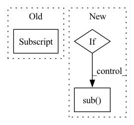

Pattern ID :22842
Before Change
})
elif y["ner"] == "NUMBER":
try:
_ = float(y["text"] )
if "." in word["text"]:
amounts.append({
"text": word["text"],After Change
amounts = []
amount_re = r"\$?([0-9]*,)*[0-9]{3,}(\.[0-9]+)?"
for word in all_words:
if not re.search(amount_re, word["text"]):
continue
try:
formatted_word = re.sub( r"[$,]","", word["text"])
float(formatted_word)
amounts.append({
"text": word["text"],In pattern: SUPERPATTERN
Frequency: 3
Non-data size: 3
Instances Fragment ID: 72612722
Project Name: praneet9/representation-learning-for-information-extraction
Commit Name: d88e952060a3f32a13c153e32b132d7bc0dd39f0
Time: 2021-02-21
Author: tanmayvakare@gmail.com
File Name: utils/extract_candidates.py
M Class Name: AnonimousClass
N Class Name: AnonimousClass
M Method Name: get_amounts(1)
N Method Name: get_amounts(1)
M Parent Class:
N Parent Class:
M File Name: utils/extract_candidates.py
N File Name: utils/extract_candidates.py
M Start Line: 77
M End Line: 106
N Start Line: 67
N End Line: 86
Before Change
if "y" in df:
df["y_scaled"] = np.empty_like(df["y"])
not_na = df["y"].notna()
df.loc[not_na, "y_scaled"] = (df.loc[not_na,"y"].values - data_params.y_shift) / data_params.y_scale
return df
After Change
df["t"] = df[name].sub(data_params[name].shift)
df["t"] = df["t"].div(data_params[name].scale)
// df.loc[:, "t"] = (df["ds"] - data_params["ds"].shift) / data_params["ds"].scale
elif df[name].sub( data_params[name].shift)
df[name] = df[name].div(data_params[name].scale)
return df
Fragment ID: 72612721
Project Name: ourownstory/neural_prophet
Commit Name: 36d4ccf3da490fdc7f501683e8aae4d29f1c4ea4
Time: 2020-06-19
Author: oskar.triebe@merantix.com
File Name: neuralprophet/df_utils.py
M Class Name: AnonimousClass
N Class Name: AnonimousClass
M Method Name: normalize(2)
N Method Name: normalize(2)
M Parent Class:
N Parent Class:
M File Name: neuralprophet/df_utils.py
N File Name: neuralprophet/df_utils.py
M Start Line: 104
M End Line: 109
N Start Line: 71
N End Line: 85
Before Change
def __getitem__(self, index):
if self.cv_mode:
img = cv2.imread(self.img_names[index] )
img = cv2.cvtColor(img, cv2.COLOR_BGR2RGB)
else:
img = Image.open(self.img_names[index])After Change
if self.transforms:
img, label = self.transforms(img, label)
if not self.unknown:
out_of_char = f"[^{self.character}]"
label = re.sub( out_of_char, "", label)
return img, label
def __len__(self):
return self.samples Fragment ID: 72612713
Project Name: media-smart/vedastr
Commit Name: 685a5e31bf5867fe5db62ba54b0b703b25136ce7
Time: 2020-04-01
Author: jun.sun@media-smart.cn
File Name: vedastr/datasets/base.py
M Class Name: BaseDataset
N Class Name: BaseDataset
M Method Name: __getitem__(2)
N Method Name: __getitem__(2)
M Parent Class: Dataset
N Parent Class: Dataset
M File Name: vedastr/datasets/base.py
N File Name: vedastr/datasets/base.py
M Start Line: 48
M End Line: 53
N Start Line: 49
N End Line: 57